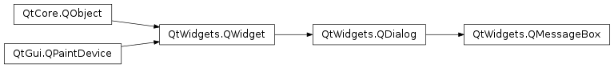
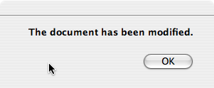
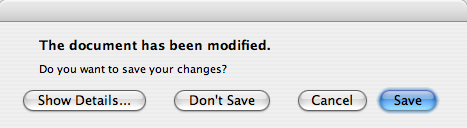

QMessageBox¶
Synopsis¶
Functions¶
- def
addButton(button) - def
addButton(button, role) - def
addButton(text, role) - def
button(which) - def
buttonRole(button) - def
buttonText(button) - def
buttons() - def
checkBox() - def
clickedButton() - def
defaultButton() - def
detailedText() - def
escapeButton() - def
icon() - def
iconPixmap() - def
informativeText() - def
open(receiver, member) - def
removeButton(button) - def
setButtonText(button, text) - def
setCheckBox(cb) - def
setDefaultButton(button) - def
setDefaultButton(button) - def
setDetailedText(text) - def
setEscapeButton(button) - def
setEscapeButton(button) - def
setIcon(arg__1) - def
setIconPixmap(pixmap) - def
setInformativeText(text) - def
setStandardButtons(buttons) - def
setText(text) - def
setTextFormat(format) - def
setTextInteractionFlags(flags) - def
standardButton(button) - def
standardButtons() - def
text() - def
textFormat() - def
textInteractionFlags()
Signals¶
- def
buttonClicked(button)
Static functions¶
- def
about(parent, title, text) - def
aboutQt(parent[, title=”“]) - def
critical(parent, title, text, button0, button1) - def
critical(parent, title, text[, buttons=QMessageBox.Ok[, defaultButton=NoButton]]) - def
information(parent, title, text, button0[, button1=NoButton]) - def
information(parent, title, text[, buttons=QMessageBox.Ok[, defaultButton=NoButton]]) - def
question(parent, title, text, button0, button1) - def
question(parent, title, text[, buttons=QMessageBox.StandardButtons(Yes | No)[, defaultButton=NoButton]]) - def
standardIcon(icon) - def
warning(parent, title, text, button0, button1) - def
warning(parent, title, text[, buttons=QMessageBox.Ok[, defaultButton=NoButton]])
Detailed Description¶
The
PySide2.QtWidgets.QMessageBoxclass provides a modal dialog for informing the user or for asking the user a question and receiving an answer.A message box displays a primary
PySide2.QtWidgets.QMessageBox.text()to alert the user to a situation, aninformative textto further explain the alert or to ask the user a question, and an optionaldetailed textto provide even more data if the user requests it. A message box can also display anPySide2.QtWidgets.QMessageBox.icon()andstandard buttonsfor accepting a user response.Two APIs for using
PySide2.QtWidgets.QMessageBoxare provided, the property-based API, and the static functions. Calling one of the static functions is the simpler approach, but it is less flexible than using the property-based API, and the result is less informative. Using the property-based API is recommended.
The Property-based API¶
To use the property-based API, construct an instance of
PySide2.QtWidgets.QMessageBox, set the desired properties, and callexec()to show the message. The simplest configuration is to set only themessage textproperty.msgBox = QMessageBox() msgBox.setText("The document has been modified.") msgBox.exec_()The user must click the OK button to dismiss the message box. The rest of the GUI is blocked until the message box is dismissed.
A better approach than just alerting the user to an event is to also ask the user what to do about it. Store the question in the
informative textproperty, and set thestandard buttonsproperty to the set of buttons you want as the set of user responses. The buttons are specified by combining values fromStandardButtonsusing the bitwise OR operator. The display order for the buttons is platform-dependent. For example, on Windows, Save is displayed to the left of Cancel, whereas on Mac OS, the order is reversed.Mark one of your standard buttons to be your
default button.msgBox = QMessageBox() msgBox.setText("The document has been modified.") msgBox.setInformativeText("Do you want to save your changes?") msgBox.setStandardButtons(QMessageBox.Save | QMessageBox.Discard | QMessageBox.Cancel) msgBox.setDefaultButton(QMessageBox.Save) ret = msgBox.exec_()This is the approach recommended in the macOS Guidelines. Similar guidelines apply for the other platforms, but note the different ways the
informative textis handled for different platforms.
The
exec()slot returns theStandardButtonsvalue of the button that was clicked.if ret == QMessageBox.Save: # Save was clicked elif ret == QMessageBox.Discard: # Don't save was clicked elif ret == QMessageBox.Cancel: # cancel was clicked else: # should never be reachedTo give the user more information to help him answer the question, set the
detailed textproperty. If thedetailed textproperty is set, the Show Details… button will be shown.Clicking the Show Details… button displays the detailed text.

Rich Text and the Text Format Property¶
The
detailed textproperty is always interpreted as plain text. Themain textandinformative textproperties can be either plain text or rich text. These strings are interpreted according to the setting of thetext formatproperty. The default setting isauto-text.Note that for some plain text strings containing XML meta-characters, the auto-text
rich text detection testmay fail causing your plain text string to be interpreted incorrectly as rich text. In these rare cases, useQt.convertFromPlainText()to convert your plain text string to a visually equivalent rich text string, or set thetext formatproperty explicitly withPySide2.QtWidgets.QMessageBox.setTextFormat().
Severity Levels and the Icon and Pixmap Properties¶
PySide2.QtWidgets.QMessageBoxsupports four predefined message severity levels, or message types, which really only differ in the predefined icon they each show. Specify one of the four predefined message types by setting thePySide2.QtWidgets.QMessageBox.icon()property to one of thepredefined icons. The following rules are guidelines:

QuestionFor asking a question during normal operations. 
InformationFor reporting information about normal operations. WarningFor reporting non-critical errors. 
CriticalFor reporting critical errors.
Predefined iconsare not defined byPySide2.QtWidgets.QMessageBox, but provided by the style. The default value isNo Icon. The message boxes are otherwise the same for all cases. When using a standard icon, use the one recommended in the table, or use the one recommended by the style guidelines for your platform. If none of the standard icons is right for your message box, you can use a custom icon by setting theicon pixmapproperty instead of setting thePySide2.QtWidgets.QMessageBox.icon()property.In summary, to set an icon, use either
PySide2.QtWidgets.QMessageBox.setIcon()for one of the standard icons, orPySide2.QtWidgets.QMessageBox.setIconPixmap()for a custom icon.
The Static Functions API¶
Building message boxes with the static functions API, although convenient, is less flexible than using the property-based API, because the static function signatures lack parameters for setting the
informative textanddetailed textproperties. One work-around for this has been to use thetitleparameter as the message box main text and thetextparameter as the message box informative text. Because this has the obvious drawback of making a less readable message box, platform guidelines do not recommend it. The Microsoft Windows User Interface Guidelines recommend using theapplication nameas thewindow's title, which means that if you have an informative text in addition to your main text, you must concatenate it to thetextparameter.Note that the static function signatures have changed with respect to their button parameters, which are now used to set the
standard buttonsand thedefault button.Static functions are available for creating
PySide2.QtWidgets.QMessageBox.information(),PySide2.QtWidgets.QMessageBox.question(),PySide2.QtWidgets.QMessageBox.warning(), andPySide2.QtWidgets.QMessageBox.critical()message boxes.ret = QMessageBox.warning(self, self.tr("My Application"), self.tr("The document has been modified.\n" + \ "Do you want to save your changes?"), QMessageBox.Save | QMessageBox.Discard | QMessageBox.Cancel, QMessageBox.Save)The Standard Dialogs example shows how to use
PySide2.QtWidgets.QMessageBoxand the other built-in Qt dialogs.
Advanced Usage¶
If the
standard buttonsare not flexible enough for your message box, you can use thePySide2.QtWidgets.QMessageBox.addButton()overload that takes a text and aQMessageBox.ButtonRoleto add custom buttons. TheQMessageBox.ButtonRoleis used byPySide2.QtWidgets.QMessageBoxto determine the ordering of the buttons on screen (which varies according to the platform). You can test the value ofPySide2.QtWidgets.QMessageBox.clickedButton()after callingexec(). For example,msgBox = QMessageBox() connectButton = msgBox.addButton(self.tr("Connect"), QMessageBox.ActionRole) abortButton = msgBox.addButton(QMessageBox.Abort) msgBox.exec_() if msgBox.clickedButton() == connectButton: # connect elif msgBox.clickedButton() == abortButton: # abort }
Default and Escape Keys¶
The default button (i.e., the button activated when Enter is pressed) can be specified using
PySide2.QtWidgets.QMessageBox.setDefaultButton(). If a default button is not specified,PySide2.QtWidgets.QMessageBoxtries to find one based on thebutton rolesof the buttons used in the message box.The escape button (the button activated when Esc is pressed) can be specified using
PySide2.QtWidgets.QMessageBox.setEscapeButton(). If an escape button is not specified,PySide2.QtWidgets.QMessageBoxtries to find one using these rules:
- If there is only one button, it is the button activated when Esc is pressed.
- If there is a
Cancelbutton, it is the button activated when Esc is pressed.- If there is exactly one button having either
the Reject roleor thethe No role, it is the button activated when Esc is pressed.When an escape button can’t be determined using these rules, pressing Esc has no effect.
See also
PySide2.QtWidgets.QDialogButtonBoxGUI Design Handbook: Message Box Standard Dialogs Example Application Example
-
class
PySide2.QtWidgets.QMessageBox(icon, title, text[, buttons=QMessageBox.NoButton[, parent=nullptr[, flags=Qt.Dialog | Qt.MSWindowsFixedSizeDialogHint]]])¶ -
class
PySide2.QtWidgets.QMessageBox([parent=nullptr]) Parameters: - icon –
PySide2.QtWidgets.QMessageBox.Icon - flags –
PySide2.QtCore.Qt.WindowFlags - title – unicode
- buttons –
PySide2.QtWidgets.QMessageBox.StandardButtons - text – unicode
- parent –
PySide2.QtWidgets.QWidget
Constructs a message box with the given
icon,title,text, and standardbuttons. Standard or custom buttons can be added at any time usingPySide2.QtWidgets.QMessageBox.addButton(). Theparentandfarguments are passed to thePySide2.QtWidgets.QDialogconstructor.The message box is an
application modaldialog box.On macOS , if
parentis not 0 and you want your message box to appear as aQt.Sheetof that parent, set the message box’swindow modalitytoQt.WindowModal(default). Otherwise, the message box will be a standard dialog.See also
PySide2.QtWidgets.QMessageBox.setWindowTitle()PySide2.QtWidgets.QMessageBox.setText()PySide2.QtWidgets.QMessageBox.setIcon()PySide2.QtWidgets.QMessageBox.setStandardButtons()Constructs a message box with no text and no buttons.
parentis passed to thePySide2.QtWidgets.QDialogconstructor.On macOS , if you want your message box to appear as a
Qt.Sheetof itsparent, set the message box’swindow modalitytoQt.WindowModalor usePySide2.QtWidgets.QMessageBox.open(). Otherwise, the message box will be a standard dialog.- icon –
-
PySide2.QtWidgets.QMessageBox.Icon¶ This enum has the following values:
Constant Description QMessageBox.NoIcon the message box does not have any icon. QMessageBox.Question an icon indicating that the message is asking a question. QMessageBox.Information an icon indicating that the message is nothing out of the ordinary. QMessageBox.Warning an icon indicating that the message is a warning, but can be dealt with. QMessageBox.Critical an icon indicating that the message represents a critical problem.
-
PySide2.QtWidgets.QMessageBox.ButtonRole¶
-
PySide2.QtWidgets.QMessageBox.StandardButton¶ These enums describe flags for standard buttons. Each button has a defined
QMessageBox.ButtonRole.Constant Description QMessageBox.Ok An “OK” button defined with the AcceptRole.QMessageBox.Open An “Open” button defined with the AcceptRole.QMessageBox.Save A “Save” button defined with the AcceptRole.QMessageBox.Cancel A “Cancel” button defined with the RejectRole.QMessageBox.Close A “Close” button defined with the RejectRole.QMessageBox.Discard A “Discard” or “Don’t Save” button, depending on the platform, defined with the DestructiveRole.QMessageBox.Apply An “Apply” button defined with the ApplyRole.QMessageBox.Reset A “Reset” button defined with the ResetRole.QMessageBox.RestoreDefaults A “Restore Defaults” button defined with the ResetRole.QMessageBox.Help A “Help” button defined with the HelpRole.QMessageBox.SaveAll A “Save All” button defined with the AcceptRole.QMessageBox.Yes A “Yes” button defined with the YesRole.QMessageBox.YesToAll A “Yes to All” button defined with the YesRole.QMessageBox.No A “No” button defined with the NoRole.QMessageBox.NoToAll A “No to All” button defined with the NoRole.QMessageBox.Abort An “Abort” button defined with the RejectRole.QMessageBox.Retry A “Retry” button defined with the AcceptRole.QMessageBox.Ignore An “Ignore” button defined with the AcceptRole.QMessageBox.NoButton An invalid button. The following values are obsolete:
Constant Description QMessageBox.YesAll Use instead. QMessageBox.NoAll Use instead. QMessageBox.Default Use the defaultButtonargument ofPySide2.QtWidgets.QMessageBox.information(),PySide2.QtWidgets.QMessageBox.warning(), etc. instead, or callPySide2.QtWidgets.QMessageBox.setDefaultButton().QMessageBox.Escape Call PySide2.QtWidgets.QMessageBox.setEscapeButton()instead.QMessageBox.FlagMask QMessageBox.ButtonMask See also
QMessageBox.ButtonRolePySide2.QtWidgets.QMessageBox.standardButtons()
-
static
PySide2.QtWidgets.QMessageBox.about(parent, title, text)¶ Parameters: - parent –
PySide2.QtWidgets.QWidget - title – unicode
- text – unicode
Displays a simple about box with title
titleand texttext. The about box’s parent isparent.looks for a suitable icon in four locations:
- It prefers
parent->icon()if that exists. - If not, it tries the top-level widget containing
parent. - If that fails, it tries the
active window. - As a last resort it uses the Information icon.
The about box has a single button labelled “OK”. On macOS , the about box is popped up as a modeless window; on other platforms, it is currently application modal.
- parent –
-
static
PySide2.QtWidgets.QMessageBox.aboutQt(parent[, title=""])¶ Parameters: - parent –
PySide2.QtWidgets.QWidget - title – unicode
Displays a simple message box about Qt, with the given
titleand centered overparent(ifparentis not 0). The message includes the version number of Qt being used by the application.This is useful for inclusion in the Help menu of an application, as shown in the Menus example.
PySide2.QtWidgets.QApplicationprovides this functionality as a slot.On macOS , the about box is popped up as a modeless window; on other platforms, it is currently application modal.
See also
- parent –
-
PySide2.QtWidgets.QMessageBox.addButton(button)¶ Parameters: button – PySide2.QtWidgets.QMessageBox.StandardButtonReturn type: PySide2.QtWidgets.QPushButtonThis is an overloaded function.
Adds a standard
buttonto the message box if it is valid to do so, and returns the push button.
-
PySide2.QtWidgets.QMessageBox.addButton(text, role) Parameters: - text – unicode
- role –
PySide2.QtWidgets.QMessageBox.ButtonRole
Return type: This is an overloaded function.
Creates a button with the given
text, adds it to the message box for the specifiedrole, and returns it.
-
PySide2.QtWidgets.QMessageBox.addButton(button, role) Parameters: Adds the given
buttonto the message box with the specifiedrole.
Parameters: which – PySide2.QtWidgets.QMessageBox.StandardButtonReturn type: PySide2.QtWidgets.QAbstractButtonReturns a pointer corresponding to the standard button
which, or 0 if the standard button doesn’t exist in this message box.
Parameters: button – PySide2.QtWidgets.QAbstractButton
Parameters: button – PySide2.QtWidgets.QAbstractButtonReturn type: PySide2.QtWidgets.QMessageBox.ButtonRoleReturns the button role for the specified
button. This function returnsInvalidRoleifbuttonis 0 or has not been added to the message box.
Parameters: button – PySide2.QtCore.intReturn type: unicode Returns the text of the message box button
button, or an empty string if the message box does not contain the button.Use
PySide2.QtWidgets.QMessageBox.button()andQPushButton.text()instead.
Return type: Returns a list of all the buttons that have been added to the message box.
-
PySide2.QtWidgets.QMessageBox.checkBox()¶ Return type: PySide2.QtWidgets.QCheckBoxReturns the checkbox shown on the dialog. This is 0 if no checkbox is set.
-
PySide2.QtWidgets.QMessageBox.clickedButton()¶ Return type: PySide2.QtWidgets.QAbstractButtonReturns the button that was clicked by the user, or 0 if the user hit the Esc key and no
escape buttonwas set.If
exec()hasn’t been called yet, returns 0.Example:
messageBox = QMessageBox(self) disconnectButton = messageBox.addButton(self.tr("Disconnect"), QMessageBox.ActionRole) ... messageBox.exec_() if messageBox.clickedButton() == disconnectButton: ...
-
static
PySide2.QtWidgets.QMessageBox.critical(parent, title, text, button0, button1)¶ Parameters: - parent –
PySide2.QtWidgets.QWidget - title – unicode
- text – unicode
- button0 –
PySide2.QtWidgets.QMessageBox.StandardButton - button1 –
PySide2.QtWidgets.QMessageBox.StandardButton
Return type: PySide2.QtCore.int- parent –
-
static
PySide2.QtWidgets.QMessageBox.critical(parent, title, text[, buttons=QMessageBox.Ok[, defaultButton=NoButton]]) Parameters: - parent –
PySide2.QtWidgets.QWidget - title – unicode
- text – unicode
- buttons –
PySide2.QtWidgets.QMessageBox.StandardButtons - defaultButton –
PySide2.QtWidgets.QMessageBox.StandardButton
Return type: Opens a critical message box with the given
titleandtextin front of the specifiedparentwidget.The standard
buttonsare added to the message box.defaultButtonspecifies the button used when Enter is pressed.defaultButtonmust refer to a button that was given inbuttons. IfdefaultButtonisQMessageBox.NoButton,PySide2.QtWidgets.QMessageBoxchooses a suitable default automatically.Returns the identity of the standard button that was clicked. If Esc was pressed instead, the
escape buttonis returned.The message box is an
application modaldialog box.Warning
Do not delete
parentduring the execution of the dialog. If you want to do this, you should create the dialog yourself using one of thePySide2.QtWidgets.QMessageBoxconstructors.- parent –
-
PySide2.QtWidgets.QMessageBox.defaultButton()¶ Return type: PySide2.QtWidgets.QPushButtonReturns the button that should be the message box’s
default button. Returns 0 if no default button was set.
-
PySide2.QtWidgets.QMessageBox.detailedText()¶ Return type: unicode
-
PySide2.QtWidgets.QMessageBox.escapeButton()¶ Return type: PySide2.QtWidgets.QAbstractButtonReturns the button that is activated when escape is pressed.
By default,
PySide2.QtWidgets.QMessageBoxattempts to automatically detect an escape button as follows:- If there is only one button, it is made the escape button.
- If there is a
Cancelbutton, it is made the escape button. - On macOS only, if there is exactly one button with the role
QMessageBox.RejectRole, it is made the escape button.
When an escape button could not be automatically detected, pressing Esc has no effect.
-
PySide2.QtWidgets.QMessageBox.icon()¶ Return type: PySide2.QtWidgets.QMessageBox.Icon
-
PySide2.QtWidgets.QMessageBox.iconPixmap()¶ Return type: PySide2.QtGui.QPixmap
-
static
PySide2.QtWidgets.QMessageBox.information(parent, title, text, button0[, button1=NoButton])¶ Parameters: - parent –
PySide2.QtWidgets.QWidget - title – unicode
- text – unicode
- button0 –
PySide2.QtWidgets.QMessageBox.StandardButton - button1 –
PySide2.QtWidgets.QMessageBox.StandardButton
Return type: - parent –
-
static
PySide2.QtWidgets.QMessageBox.information(parent, title, text[, buttons=QMessageBox.Ok[, defaultButton=NoButton]]) Parameters: - parent –
PySide2.QtWidgets.QWidget - title – unicode
- text – unicode
- buttons –
PySide2.QtWidgets.QMessageBox.StandardButtons - defaultButton –
PySide2.QtWidgets.QMessageBox.StandardButton
Return type: Opens an information message box with the given
titleandtextin front of the specifiedparentwidget.The standard
buttonsare added to the message box.defaultButtonspecifies the button used when Enter is pressed.defaultButtonmust refer to a button that was given inbuttons. IfdefaultButtonisQMessageBox.NoButton,PySide2.QtWidgets.QMessageBoxchooses a suitable default automatically.Returns the identity of the standard button that was clicked. If Esc was pressed instead, the
escape buttonis returned.The message box is an
application modaldialog box.Warning
Do not delete
parentduring the execution of the dialog. If you want to do this, you should create the dialog yourself using one of thePySide2.QtWidgets.QMessageBoxconstructors.- parent –
-
PySide2.QtWidgets.QMessageBox.informativeText()¶ Return type: unicode
-
PySide2.QtWidgets.QMessageBox.open(receiver, member)¶ Parameters: - receiver –
PySide2.QtCore.QObject - member – str
This is an overloaded function.
Opens the dialog and connects its
PySide2.QtWidgets.QDialog.finished()orPySide2.QtWidgets.QMessageBox.buttonClicked()signal to the slot specified byreceiverandmember. If the slot inmemberhas a pointer for its first parameter the connection is toPySide2.QtWidgets.QMessageBox.buttonClicked(), otherwise the connection is toPySide2.QtWidgets.QDialog.finished().The signal will be disconnected from the slot when the dialog is closed.
- receiver –
-
static
PySide2.QtWidgets.QMessageBox.question(parent, title, text, button0, button1)¶ Parameters: - parent –
PySide2.QtWidgets.QWidget - title – unicode
- text – unicode
- button0 –
PySide2.QtWidgets.QMessageBox.StandardButton - button1 –
PySide2.QtWidgets.QMessageBox.StandardButton
Return type: PySide2.QtCore.int- parent –
-
static
PySide2.QtWidgets.QMessageBox.question(parent, title, text[, buttons=QMessageBox.StandardButtons(Yes | No)[, defaultButton=NoButton]]) Parameters: - parent –
PySide2.QtWidgets.QWidget - title – unicode
- text – unicode
- buttons –
PySide2.QtWidgets.QMessageBox.StandardButtons - defaultButton –
PySide2.QtWidgets.QMessageBox.StandardButton
Return type: Opens a question message box with the given
titleandtextin front of the specifiedparentwidget.The standard
buttonsare added to the message box.defaultButtonspecifies the button used when Enter is pressed.defaultButtonmust refer to a button that was given inbuttons. IfdefaultButtonisQMessageBox.NoButton,PySide2.QtWidgets.QMessageBoxchooses a suitable default automatically.Returns the identity of the standard button that was clicked. If Esc was pressed instead, the
escape buttonis returned.The message box is an
application modaldialog box.Warning
Do not delete
parentduring the execution of the dialog. If you want to do this, you should create the dialog yourself using one of thePySide2.QtWidgets.QMessageBoxconstructors.- parent –
-
PySide2.QtWidgets.QMessageBox.removeButton(button)¶ Parameters: button – PySide2.QtWidgets.QAbstractButtonRemoves
buttonfrom the button box without deleting it.
-
PySide2.QtWidgets.QMessageBox.setButtonText(button, text)¶ Parameters: - button –
PySide2.QtCore.int - text – unicode
Sets the text of the message box button
buttontotext. Setting the text of a button that is not in the message box is silently ignored.Use
PySide2.QtWidgets.QMessageBox.addButton()instead.- button –
-
PySide2.QtWidgets.QMessageBox.setCheckBox(cb)¶ Parameters: cb – PySide2.QtWidgets.QCheckBoxSets the checkbox
cbon the message dialog. The message box takes ownership of the checkbox. The argumentcbcan be 0 to remove an existing checkbox from the message box.
-
PySide2.QtWidgets.QMessageBox.setDefaultButton(button)¶ Parameters: button – PySide2.QtWidgets.QPushButtonSets the message box’s
default buttontobutton.
-
PySide2.QtWidgets.QMessageBox.setDefaultButton(button) Parameters: button – PySide2.QtWidgets.QMessageBox.StandardButtonSets the message box’s
default buttontobutton.
-
PySide2.QtWidgets.QMessageBox.setDetailedText(text)¶ Parameters: text – unicode
-
PySide2.QtWidgets.QMessageBox.setEscapeButton(button)¶ Parameters: button – PySide2.QtWidgets.QMessageBox.StandardButtonSets the buttons that gets activated when the Escape key is pressed to
button.
-
PySide2.QtWidgets.QMessageBox.setEscapeButton(button) Parameters: button – PySide2.QtWidgets.QAbstractButtonSets the button that gets activated when the Escape key is pressed to
button.
-
PySide2.QtWidgets.QMessageBox.setIcon(arg__1)¶ Parameters: arg__1 – PySide2.QtWidgets.QMessageBox.IconSee also
-
PySide2.QtWidgets.QMessageBox.setIconPixmap(pixmap)¶ Parameters: pixmap – PySide2.QtGui.QPixmap
-
PySide2.QtWidgets.QMessageBox.setInformativeText(text)¶ Parameters: text – unicode
-
PySide2.QtWidgets.QMessageBox.setStandardButtons(buttons)¶ Parameters: buttons – PySide2.QtWidgets.QMessageBox.StandardButtons
-
PySide2.QtWidgets.QMessageBox.setText(text)¶ Parameters: text – unicode See also
-
PySide2.QtWidgets.QMessageBox.setTextFormat(format)¶ Parameters: format – PySide2.QtCore.Qt.TextFormat
-
PySide2.QtWidgets.QMessageBox.setTextInteractionFlags(flags)¶ Parameters: flags – PySide2.QtCore.Qt.TextInteractionFlags
-
PySide2.QtWidgets.QMessageBox.standardButton(button)¶ Parameters: button – PySide2.QtWidgets.QAbstractButtonReturn type: PySide2.QtWidgets.QMessageBox.StandardButtonReturns the standard button enum value corresponding to the given
button, orNoButtonif the givenbuttonisn’t a standard button.
-
PySide2.QtWidgets.QMessageBox.standardButtons()¶ Return type: PySide2.QtWidgets.QMessageBox.StandardButtons
-
static
PySide2.QtWidgets.QMessageBox.standardIcon(icon)¶ Parameters: icon – PySide2.QtWidgets.QMessageBox.IconReturn type: PySide2.QtGui.QPixmapReturns the pixmap used for a standard icon. This allows the pixmaps to be used in more complex message boxes.
iconspecifies the required icon, e.g.QMessageBox.Question,QMessageBox.Information,QMessageBox.WarningorQMessageBox.Critical.Call
QStyle.standardIcon()withQStyle.SP_MessageBoxInformationetc. instead.
-
PySide2.QtWidgets.QMessageBox.text()¶ Return type: unicode
-
PySide2.QtWidgets.QMessageBox.textFormat()¶ Return type: PySide2.QtCore.Qt.TextFormat
-
PySide2.QtWidgets.QMessageBox.textInteractionFlags()¶ Return type: PySide2.QtCore.Qt.TextInteractionFlags
-
static
PySide2.QtWidgets.QMessageBox.warning(parent, title, text, button0, button1)¶ Parameters: - parent –
PySide2.QtWidgets.QWidget - title – unicode
- text – unicode
- button0 –
PySide2.QtWidgets.QMessageBox.StandardButton - button1 –
PySide2.QtWidgets.QMessageBox.StandardButton
Return type: PySide2.QtCore.int- parent –
-
static
PySide2.QtWidgets.QMessageBox.warning(parent, title, text[, buttons=QMessageBox.Ok[, defaultButton=NoButton]]) Parameters: - parent –
PySide2.QtWidgets.QWidget - title – unicode
- text – unicode
- buttons –
PySide2.QtWidgets.QMessageBox.StandardButtons - defaultButton –
PySide2.QtWidgets.QMessageBox.StandardButton
Return type: Opens a warning message box with the given
titleandtextin front of the specifiedparentwidget.The standard
buttonsare added to the message box.defaultButtonspecifies the button used when Enter is pressed.defaultButtonmust refer to a button that was given inbuttons. IfdefaultButtonisQMessageBox.NoButton,PySide2.QtWidgets.QMessageBoxchooses a suitable default automatically.Returns the identity of the standard button that was clicked. If Esc was pressed instead, the
escape buttonis returned.The message box is an
application modaldialog box.Warning
Do not delete
parentduring the execution of the dialog. If you want to do this, you should create the dialog yourself using one of thePySide2.QtWidgets.QMessageBoxconstructors.- parent –
© 2018 The Qt Company Ltd. Documentation contributions included herein are the copyrights of their respective owners. The documentation provided herein is licensed under the terms of the GNU Free Documentation License version 1.3 as published by the Free Software Foundation. Qt and respective logos are trademarks of The Qt Company Ltd. in Finland and/or other countries worldwide. All other trademarks are property of their respective owners.